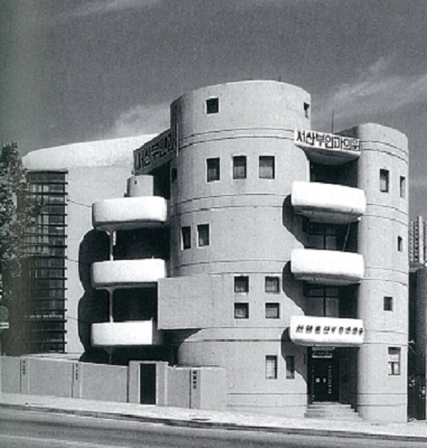
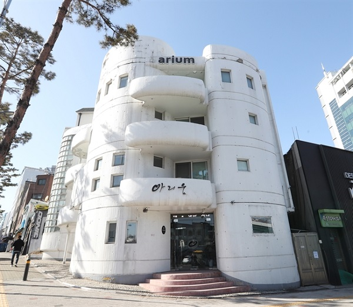
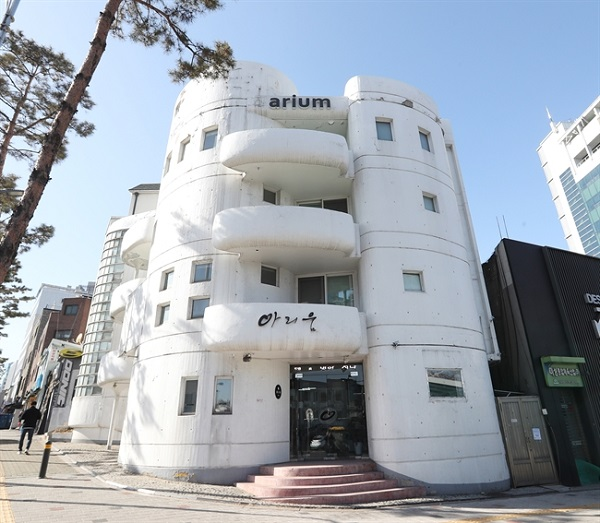
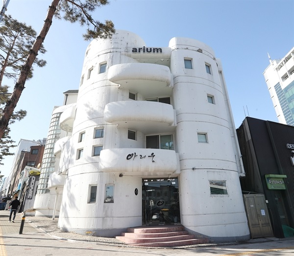

서산부인과 의원(현 아리움 사옥, 1967)

 


원래의 용도인 산부인과에 맞게 아기를 담는 원초적 모태 공간인 자궁의 이미지를 건축물에서 연상하도록 하며, 기하학적인 직선을 곡선을 통해 '증식하는 원'으로 표현한 김중업만의 독특한 조형언어가 전개된 건축물이다.
노출 콘크리트를 사용한 외벽으로 자유로운 곡면을 이루어 벽, 발코니, 경사로를 구성하고 있어 기존에 쓰이는 형식인 격자형 모듈에서 탈피한 모습을 보여준다.
동대문역사문화공원역 앞에 위치하고 있으며 현재 아리움이라는 디자인 사옥으로 쓰이고 있고, 등록 문화재 신청이 되었다.